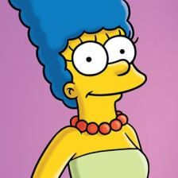
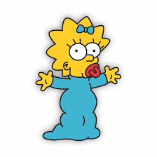

Os Simpsons
Sua estreia foi em 17 de dezembro de 1989 sendo considerada como uma das maiores séries de televisão de todos os tempos, os Simpsons é uma série de animação norte americana criada por Matt Groening para a Fox Broadcasting Company. A série é uma paródia satírica do estilo de vida da classe média dos Estados Unidos, simbolizada pela família protagonista, que consiste de Homer Jay Simpson, Marjorie (Marge) Bouvier Simpson, Bartholomew (Bart) Simpson, Elisabeth (Lisa) Marie Simpson e Margareth (Maggie) Simpson. A série se passa na fictícia cidade de Springfield e satiriza a cultura e a sociedade norte-americanas, a televisão e vários aspectos da condição humana.
A Família
Conheça um pouco mais sobre cada um dos membros da família Simpson e suas principais caractérísticas
Homer Jay Simpson
Homer Jay Simpson (12 de maio de 1956) é o patriarca da família Simpsons. Homer é o pai desajeitado da família Simpson. Com sua esposa, Marge, ele tem três filhos: Bart, filho de quem não gosta, Lisa e Maggie. Como o sustentador da família, ele trabalha na Usina Nuclear de Springfield. Homer encarna vários estereótipos cômicos de estadunidenses da classe trabalhadora: é rude, acima do peso, incompetente, grosseiro, preguiçoso, ignorante e adora comer rosquinhas. Entretanto, é bastante dedicado a sua família.
Marjorie Bouvier Simpson
Marjorie "Marge" Bouvier Simpson é a esposa de Homer Simpson e mãe de Lisa, Bart e Maggie Simpson. Ela é mais conhecida por causa de seus longos cabelos azuis, cujo penteado foi inspirado no filme A Noiva de Frankenstein e sua personalidade muito paciente. Mesmo Homer aprontando inúmeras confusões, ela continua sendo uma esposa fiel e dedicada, assim como é para com os filhos. Marge nasceu em 1956 com 45 anos de Idade. Os pais Jackie Bouvier (mae) e Clancy Bouvier (pai de Marge Bouvier) Com poucas exceções, Marge gasta a maior parte de seu tempo como dona de casa, cuidando de Maggie, ajudando Lisa ou defendendo Bart da raiva de seu pai.
Bartholomew Jay Simpson
Bartholomew "Bart" Jay Simpson - o filho mais velho, com 10 anos, um garoto problemático, que adora atirar com seu estilingue, andar de skate e fazer apostas com seu pai. Não tira notas boas na escola e vive se metendo em confusões. Seu melhor amigo se chama Milhouse. É alérgico a camarão, tem uma cicatriz no pulso e já ganhou um Globo de Ouro e um Oscar pelo seu trabalho no curta "Pai furioso". Na primeira temporada era o personagem principal da trama, mas perdeu o lugar para seu pai Homer.
Lisa Marie Simpson
Lisa Marie Simpson a filha do meio e totalmente diferente do resto da família, tem 8 anos e é superdotada, intelectual, estudiosa, vegetariana e ambientalista, toca perfeitamente saxofone e adora jazz. É adepta ao budismo, em oposição ao resto da família, que segue o cristianismo.
Margareth Simpson
Margareth "Maggie" Simpson a filha mais nova, de apenas 1 ano. Fica com a sua chupeta, porém assume papel decisivo em alguns episódios como em "Quem Matou o Sr. Burns" na qual "acidentalmente" atirou no Sr. Burns. No episódio "Poppa's Got a Brand New Badge", entretanto, demonstra formidável perícia ao por fora de ação com um rifle um grupo de mafiosos que ameaçavam seu pai. Posteriormente esconde a arma em seu berço.